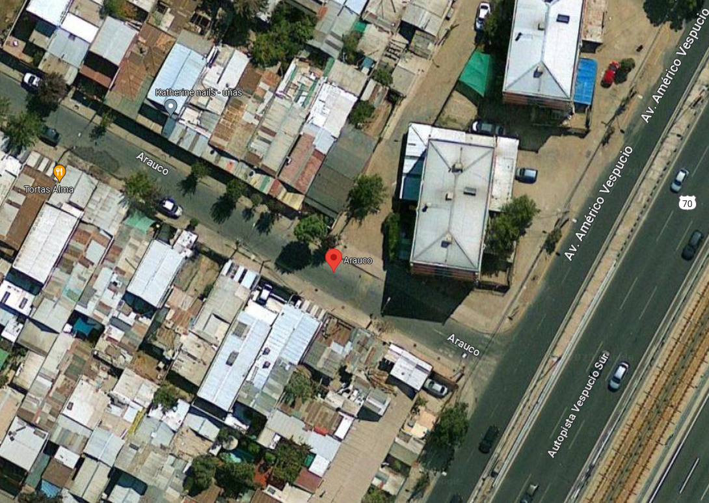

Sucursales
Sucursal 1
Vision optima San Guillermo es una reconocida tienda de óptica especializada en ofrecer soluciones visuales de calidad. Cuentan con un equipo de optometristas altamente capacitados que realizan exámenes de la vista y ayudan a los clientes a encontrar las mejores opciones en lentes y gafas. Además, ofrecen una amplia selección de marcas de monturas y lentes de contacto para satisfacer las necesidades y estilos de cada cliente.

Dirección: Calle Las Hijuelas, Poblacion San Guillermo de Puente Alto
Horario: 10:00 - 21:30 horas
Teléfono: +569 4682 3675
Sucursal 2
Vision optima Los Leones es una cadena de tiendas de óptica con una amplia presencia en todo el país. Se destacan por ofrecer productos de alta calidad a precios accesibles. Su objetivo es brindar a los clientes una experiencia cómoda y personalizada al elegir sus gafas o lentes de contacto. Cuentan con un equipo de profesionales capacitados que brindan asesoramiento experto y realizan exámenes visuales completos.

Dirección: Calle Alto Los Leones, Plaza Viva de Puente Alto
Horario: 10:00 - 19:00 horas
Teléfono: +569 1234 5678
Sucursal 3
Vision optima Parque Central se especializa en la venta de gafas de diseñador y productos ópticos de lujo. Sus tiendas están diseñadas con un enfoque elegante y moderno para crear un ambiente exclusivo. Ofrecen una amplia selección de monturas de marcas reconocidas y lentes de alta calidad. Además, cuentan con optometristas especializados que brindan servicios de atención visual personalizados y adaptación de lentes de contacto.

Dirección: Avenida Parque Central, Ciudad del Este de Puente Alto
Horario: 09:00 - 18:30 horas
Teléfono: +569 9145 6374
Sucursal 4
Vision optima Arauco es una tienda de óptica enfocada en ofrecer productos y servicios de calidad a precios competitivos. Tienen una amplia variedad de monturas, lentes y accesorios para satisfacer las necesidades y preferencias de sus clientes. Sus profesionales de la salud visual están disponibles para realizar exámenes de la vista y brindar asesoramiento experto en la elección de lentes y gafas. Además, cuentan con servicios de reparación y ajuste de gafas para garantizar la comodidad y durabilidad de los productos adquiridos.
Dirección: Calle Arauco, Villa O'Higgins de La Florida
Horario: 10:30 - 20:00 horas
Teléfono: +569 3674 9567